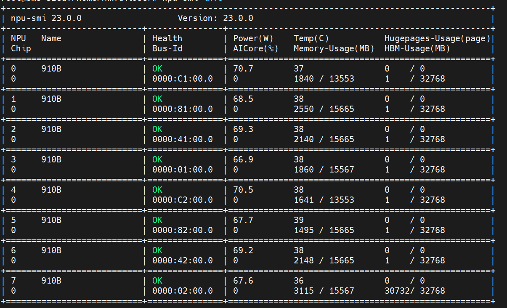
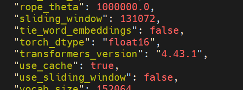
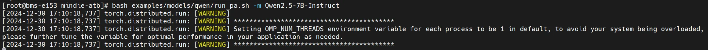
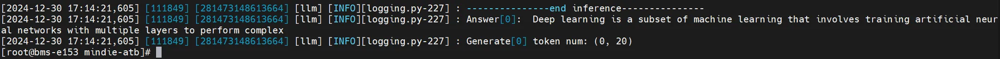
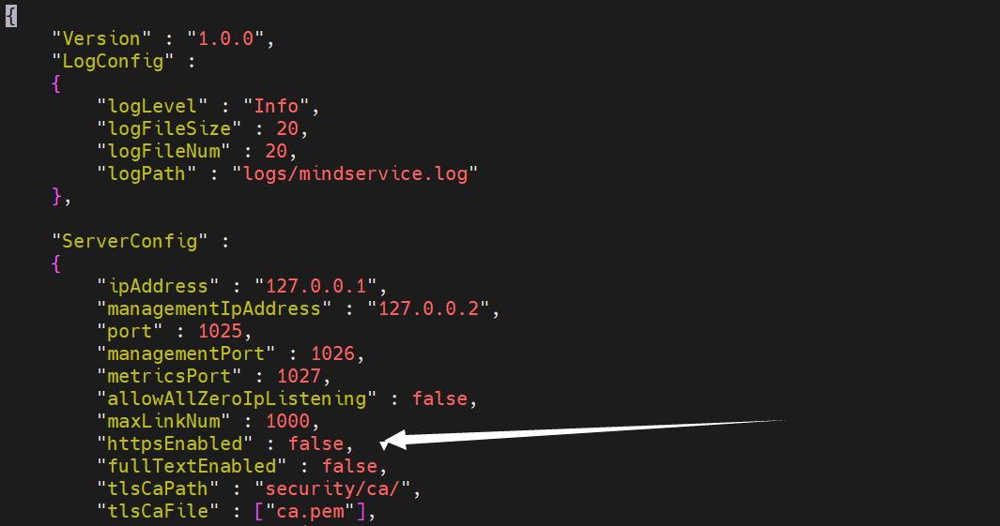
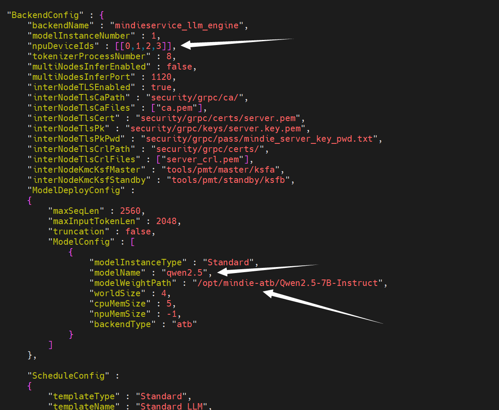
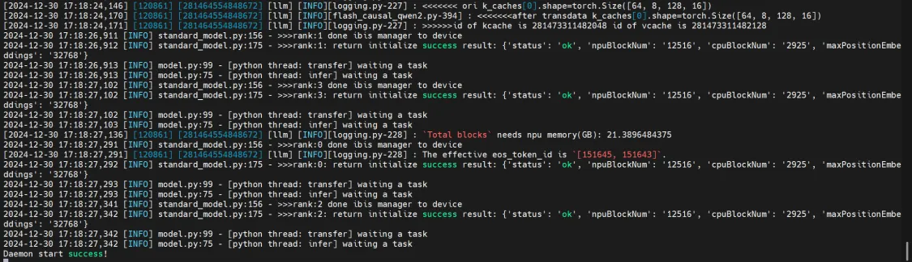
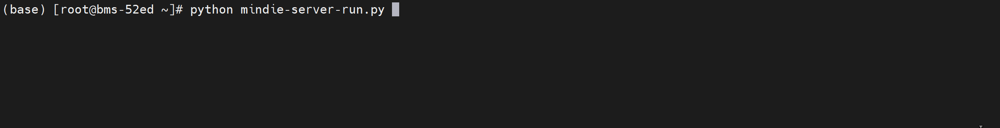

在华为**Atlas800服务器（型号：9000）**上用MindIE进行Qwen2.5 7B模型部署
服务器参数:
- CPU: 4 × HUAWEI Kunpeng 920 5250
- NPU: 8 × Ascend 910B 64GB
- 架构：Arm
- 系统: EulerOS 2.0 SP8
软件信息:
-
Software Version : 23.0.0
-
Firmware Version : 7.1.0.3.220
-
CANN : 8.0.T60
-
Kernal : 8.0.T60
-
nnal : 8.0.T60
-
mindie : 1.0.T70
-
mindie-atb : 1.0.T70
-
python : 3.10.13
因为使用了Docker容器, docker中系统为Ubuntu 18.04.6 LTS
配置环境
各软件的下载路径
以Euleros为例
驱动 ：下载地址
固件：下载地址
CANN：下载地址
kernel：下载地址
nnal：下载地址
mindie：下载地址
mindie-atb：下载地址
安装系统依赖:
sudo apt install -y gcc g++ make cmake unzip zlib1g-dev libffi-dev libssl-dev pciutils net-tools libsqlite3-dev liblapack-dev gfortran python3-dev
安装驱动和固件:
注意先安装驱动, 再安装固件
# 开始安装固件
# 进入软件包所在目录，执行如下命令增加执行权限和校验软件包的一致性和完整性。
chmod +x Ascend-hdk-910-npu-driver_23.0.0_linux-aarch64.run
./Ascend-hdk-910-npu-driver_23.0.0_linux-aarch64.run --check
# 出现如下回显信息，表示软件包校验成功
# Verifying archive integrity... 100% SHA256 checksums are OK. All good.
# 安装驱动
./Ascend-hdk-910-npu-driver_23.0.0_linux-aarch64.run --full --install-for-all
# 若系统出现如下关键回显信息，则表示驱动安装成功
# Driver package installed successfully!
# 开始安装固件
# 进入软件包所在目录，执行如下命令增加执行权限和校验软件包的一致性和完整性。
chmod +x Ascend-hdk-910-npu-firmware_7.1.0.3.220.run
./Ascend-hdk-910-npu-firmware_7.1.0.3.220.run --check
# 出现如下回显信息，表示软件包校验成功
# Verifying archive integrity... 100% SHA256 checksums are OK. All good.
# 安装固件
./Ascend-hdk-910-npu-firmware_7.1.0.3.220.run --full
# 若系统出现如下关键回显信息，表示固件安装成功
# Firmware package installed successfully! Reboot now or after driver installation for the installation/upgrade to take effect
驱动和固件安装成功后需要重启服务器，使安装生效。
可以使用 npu-smi info 查看安装好的驱动信息。

安装CANN、kernel、nnal、mindie:
CANN:
# 在软件包所在目录，执行命令增加执行权限和校验软件包的一致性和完整性, 然后安装。
chmod +x Ascend-cann-toolkit_8.0.T60_linux-aarch64.run
./Ascend-cann-toolkit_8.0.T60_linux-aarch64.run --check
./Ascend-cann-toolkit_8.0.T60_linux-aarch64.run --install
kernel:
# 在软件包所在目录，执行命令增加执行权限和校验软件包的一致性和完整性, 然后安装。
chmod +x Ascend-cann-kernels-910_8.0.T60_linux-aarch64.run
./Ascend-cann-kernels-910_8.0.T60_linux-aarch64.run --check
./Ascend-cann-kernels-910_8.0.T60_linux-aarch64.run --install
nnal:
# 在软件包所在目录，执行命令增加执行权限和校验软件包的一致性和完整性, 然后安装。
chmod +x Ascend-cann-nnal_8.0.T60_linux-aarch64.run
./Ascend-cann-nnal_8.0.T60_linux-aarch64.run --check
./Ascend-cann-nnal_8.0.T60_linux-aarch64.run --install
mindie:
# 在软件包所在目录，执行命令增加执行权限和校验软件包的一致性和完整性, 然后安装。
chmod +x Ascend-mindie_1.0.T70_linux-aarch64.run
./Ascend-mindie_1.0.T70_linux-aarch64.run --check
./Ascend-mindie_1.0.T70_linux-aarch64.run --install
获取源码:
将在上方下载的mindie-atb压缩包放在/otp/mindie-atb/的路径下解压缩
tar -zxvf Ascend-mindie-atb-models_1.0.T70_linux-aarch64_py310_torch2.1.0-abi0.tar.gz
把qwen2.5-7b的权重放在/otp/mindie-atb/的路径下, 可以在huggingface的镜像网站上找到
git clone https://hf-mirror.com/Qwen/Qwen2.5-7B-Instruct
然后进入该文件夹, 执行git lfs pull
下载好Qwen2.5-7B-Instruct后, 进入该包, 执行vi config.json修改config.json文件

如图, 将其中的torch_dtype项改为float16
**设置环境变量 **
使用source更新使环境变量生效
source /usr/local/Ascend/ascend-toolkit/set_env.sh
source /usr/local/Ascend/nnal/atb/set_env.sh
source /usr/local/Ascend/mindie/set_env.sh
source /opt/mindie-atb/set_env.sh
关键的python库的版本:
- torch==2.1.0
- torch-npu==2.1.0.post6
- transformers==4.43.1
- tokenizers==0.19.1
进行模型推理
进入到/opt/mindie-atb/中, 执行如下命令, 进行推理测试:
cd /opt/mindie-atb
bash examples/models/qwen/run_pa.sh -m Qwen2.5-7B-Instruct
示例，如下图所示即为正常：


进行mindie-servier服务推理
修改mindie-servier配置:
# 进入到mindie-server目录下；
cd /usr/local/Ascend/mindie/latest/mindie-service
# 修改 config.json 文件，首先打开该文件
vi conf/config.json
# 然后进行修改，如下图所示


这些参数可以在配置参数说明-MindIE Server-MindIE Service组件-MindIE Service开发指南-服务化集成部署-MindIE1.0.RC3开发文档-昇腾社区找到说明
启动 mindie-server 服务
根据上面的config.json可以看到, 服务会启动在 http://127.0.0.1:1025 ，用户可通过在config.json文件下修改ipAddress和port参数来自定义启动IP地址与端口号。
cd /usr/local/Ascend/mindie/latest/mindie-service
# 启动服务并将日志输入到 output.log文件中
nohup ./bin/mindieservice_daemon > output.log 2>&1 &
# 可通过如下命令查看日志
tail -f output.log
# 如下图所示说明服务启动成功

启动后, 即可使用mindie-server服务, 我们写一个python脚本为例
import requests
import json
def stream_chat_completion():
inputs = input("user:")
url = 'http://localhost:1025/v1/chat/completions'
headers = {
"Content-Type": "application/json",
"Accept": "text/event-stream"
}
data = {
"model": "qwen2.5",
"messages": [
{"role": "system", "content": "你是位人工智能专家。"},
{"role": "user", "content": f"{inputs}"}
],
"stream": True
}
response = requests.post(url, headers=headers, json=data, stream=True)
for line in response.iter_lines():
if line:
decoded_line = line.decode('utf-8')
if decoded_line.startswith('data: '):
event_data = decoded_line[len('data: '):]
if event_data == '[DONE]':
break
try:
event_json = json.loads(event_data)
if 'choices' in event_json:
for choice in event_json['choices']:
if 'delta' in choice and 'content' in choice['delta']:
print(choice['delta']['content'], end='', flush=True)
except json.JSONDecodeError:
print("Error decoding JSON:", event_data)
if __name__ == "__main__":
stream_chat_completion()
效果如下:

更多的功能和服务可以参考该文档:使用指导-MindIE Server-MindIE Service组件-MindIE Service开发指南-服务化集成部署-MindIE1.0.RC3开发文档-昇腾社区
本篇文章完